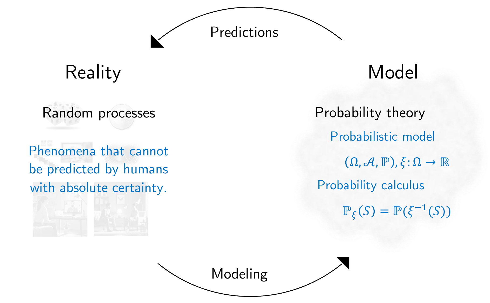

Probability theory
Preliminary remarks
Probability theory is a mathematical model for describing and quantitatively reasoning about random processes of reality (Figure 1). By random processes we mean all phenomena that cannot be predicted by us with absolute certainty, and whose outcome is therefore subject to uncertainty. Obvious and familiar examples of random processes are throwing a die or tossing a coin. However, the concept of a random process, and thus the domain of application of probability theory, should be understood much more broadly. For example, the outcome of an election, tomorrow’s weather, the measurement value of an electroencephalography electrode at a particular point in time, or the effect of a psychotherapy intervention on the health status of a patient cannot be predicted with complete certainty and are therefore subject to uncertainty. Once one begins to think about which phenomena of reality are subject to uncertainty, it becomes difficult to name nontrivial phenomena about whose outcome one has complete certainty.

As a mathematical model of random processes, probability theory in particular allows reason-based, quantitative reasoning about random processes. This is reflected primarily in so-called probability calculus. Quantitative conclusions of probability calculus have, for example, the following form: If I assume that event \(A\) occurs with probability \(p_1\) and event \(B\) occurs with probability \(p_2\), then event \(C\) has probability \(p_3\). The conclusion about the probability of \(C\) is logically and mathematically secured in the same sense in which, for example, it is logically and mathematically secured that \(1+1=2\). Whether the assumptions about the probabilities of \(A\) and \(B\) correspond to the conditions of the random process in reality, however, is not something probability theory makes statements about.
Probability theory itself uses the mathematical theory of sets and functions. At least since Kolmogoroff (1933), an axiomatic approach has prevailed: in probability theory itself, one does not ask what a probability is or to what extent the predictions of probability theory agree with reality, but instead tries to develop a self-consistent formal-mathematical system of ungrounded but intuitively plausible basic assumptions and their consequences. The starting point of this development is the probability space model of a random process, which will be introduced in 19 Probability spaces. Indeed, beyond the formal-mathematical system of probability theory, mathematical-philosophical discussions continue to this day about exactly what is to be understood by the term “probability of an event”. Roughly speaking, two somewhat opposing interpretations are predominant: on the one hand the so-called frequentist interpretation as a prototypical example of realist interpretations, and on the other hand the so-called Bayesian interpretation as a general form of so-called evidential interpretations. For a more detailed overview of different interpretations of the concept of probability, see Table 1 after Hájek (2019).
| Interpretation | Intuition | Field of application | Problems | References |
|---|---|---|---|---|
| Finite frequentist | The probability of a coin showing heads corresponds to the relative frequency with which the coin shows heads in a finite number of observations. | - | A single coin toss does not yield a meaningful prediction; probabilities change depending on the observation series and are therefore not uniquely defined. | Venn (1876) |
| Infinite frequentist | The probability of a coin showing heads corresponds to the relative frequency with which the coin shows heads in infinitely many observations. | Frequentist inference | There are no infinite observation series; for a finite number of coin tosses, the probability of an event is not defined. | Reichenbach (1949) von Mises (1951) |
| Propensity | The probability of a coin showing heads corresponds to its inherent physical tendency to land heads up in the gravitational field of the Earth. | Causal inference | The connection to relative frequencies or physical theories is not immediately clear. | Peirce (1957) Popper (1959) Gillies (2000) |
| Classical | In the absence of further information, the probabilities of a coin showing heads or tails are equal. | Games of chance, textbooks | Restriction to finite outcome spaces | Laplace (1814) Jaynes (1968) |
| Subjective | The probability of a coin showing heads corresponds to the subjective degree of uncertainty that an observer assigns to the outcome of a coin toss. | Bayesian inference | No principled restriction to axiomatically valid probabilities | De Finetti (1975) |
| Epistemic | The probability of a coin showing heads corresponds to the subjective degree of uncertainty that a rational observer assigns to the outcome of a coin toss. | Bayesian inference | The connection to relative frequencies or physical theories is not immediately clear | Ramsey (1926) Jeffreys (1939) Savage (1954) |
According to the frequentist interpretation, the probability of an event is the idealized relative frequency with which an event tends to occur under the same external conditions. For example, the frequentist interpretation of the statement “With a probability of 1/6, the die will show a 2 on the next throw” is the following: “If one were to throw a die infinitely often and determine the relative frequency of the event that the die shows a 2, then this relative frequency would be equal to 1/6.” Note that, in this interpretation, one de facto cannot empirically determine the probability of an event, since one cannot throw a die infinitely often. Of course, in this interpretation one can estimate the probability empirically. Estimation procedures themselves, however, are not part of probability theory, but of inference.
According to the Bayesian interpretation, the probability of an event is the degree of certainty that an observer assigns to the occurrence of the event based on her subjective assessment of the situation. For example, the Bayesian interpretation of the statement “With a probability of 1/6, the die will show a two on the next throw” would then be something like the following: “Based on my own and transmitted experience with throwing a die, I am 16.6% certain that the die will show a two on the next throw.”
In models of random processes that can in fact be repeated at least under similar circumstances, such as throwing a die, the difference between the frequentist and Bayesian interpretations is often rather subtle. However, as indicated above, there are many random processes that can be described with probabilities for which, because of their uniqueness, a frequentist interpretation is not appropriate. For example, statements of the form “The probability that the global heat records in 2023 are not attributable to climate change is less than 0.01” (cf. Philip et al. (2020)) make sense only under the Bayesian interpretation, because the weather records of the year 2023 are a unique, non-repeatable event.
Although, then, the interpretation of the concept of probability is by no means unambiguous, the formal definitions and calculation rules for probabilities do not differ. Both frequentist and Bayesian inference have an identical mathematical reference system and common foundation in probability theory. In essence, this fact is not so different from many other forms of mathematical modeling. For example, the derivative of a function can be interpreted as the velocity of an object or as the growth rate of a bacterial population. Although these phenomena differ intuitively very strongly with respect to reality, logical reasoning about both phenomena is identical in the domain of mathematics.